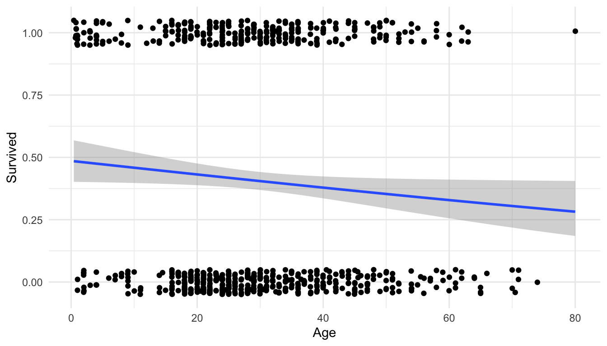

library(tidyverse)
library(here)
library(broom)
theme_set(theme_minimal())
titanic_df <- read_csv(here("data/titanic.csv"),
col_types = list(Pclass = col_factor())) |>
mutate(Pclass = fct_recode(Pclass,
"1st" = "1",
"2nd" = "2",
"3rd" = "3"))
titanic_df
#> # A tibble: 891 × 12
#> PassengerId Survived Pclass Name Sex Age SibSp Parch Ticket Fare
#> <dbl> <dbl> <fct> <chr> <chr> <dbl> <dbl> <dbl> <chr> <dbl>
#> 1 1 0 3rd Braund, M… male 22 1 0 A/5 2… 7.25
#> 2 2 1 1st Cumings, … fema… 38 1 0 PC 17… 71.3
#> 3 3 1 3rd Heikkinen… fema… 26 0 0 STON/… 7.92
#> 4 4 1 1st Futrelle,… fema… 35 1 0 113803 53.1
#> 5 5 0 3rd Allen, Mr… male 35 0 0 373450 8.05
#> 6 6 0 3rd Moran, Mr… male NA 0 0 330877 8.46
#> # ℹ 885 more rows
#> # ℹ 2 more variables: Cabin <chr>, Embarked <chr>10 Logistic Model Visualization
The purpose of this section is to use visualization to give better model interpretations in the context of logistic regression. We will again use the overall strategy of model interpretation that we used in the previous section: interpreting the model by visualizing predictions from a grid of predictor values that we create.
10.1 Logistic Regression Review (Class Prep)
Recall that, if the response variable is categorical with only two levels, then we can fit a logistic regression model. Interpreting the coefficients of a logistic regression model, however, is more challenging than interpreting the fitted coefficients in a standard linear regression model. The interpretations rely on a statement about the multiplicative change in odds, which is generally not very intuitive.
In this section, we will review the overall logistic regression model, the interpretations of the fitted regression coefficients, and how to fit a logistic regression model in R.
We will use the titanic data set, obtained from Kaggle: https://www.kaggle.com/c/titanic/data. Each row of the data set is a passenger on the Titanic ship. The columns include:
-
Survived, a variable that is a1if the passenger survived the titanic shipwreck and a0if the passenger did not survive. -
Pclass, either1st,2nd, or3rdfor the class of the passenger’s ticket -
Sex, binary variable for sex of the passenger (maleorfemale) -
Age, age of the passenger (in years).
10.1.1 Review of Model
We will first consider a model with Survived as the response variable and Age as the predictor variable. The fact that Survived is a binary categorical variable means that standard linear regression would not be appropriate. Recall that, in logistic regression, we model the log-odds of survival:
\[ log\left(\frac{\pi}{1 - \pi}\right) = \beta_0 + \beta_1 Age, \]
where \(\pi\) is the probability that the passenger survived. Also, recall that the odds of survival are equal to \(\frac{\pi}{(1 - \pi)}\) so that odds are on a scale from 0 to Infinity. We can algebraically solve for \(\pi\) as:
\[ \pi = \frac{\text{exp}(\beta_0 + \beta_1 Age)}{1 + \text{exp}(\beta_0 + \beta_1 Age)}, \]
10.1.2 Fitting the Model
We can fit the model in R with the glm() function, which is very similar to lm(), except that there is an extra argument family to specify that we want to use the "binomial" to fit a logistic regression model.
titanic_mod <- glm(Survived ~ Age,
data = titanic_df, family = "binomial")
titanic_mod
#>
#> Call: glm(formula = Survived ~ Age, family = "binomial", data = titanic_df)
#>
#> Coefficients:
#> (Intercept) Age
#> -0.05672 -0.01096
#>
#> Degrees of Freedom: 713 Total (i.e. Null); 712 Residual
#> (177 observations deleted due to missingness)
#> Null Deviance: 964.5
#> Residual Deviance: 960.2 AIC: 964.2The broom package functions augment(), tidy(), and glance() can also be used on models fit with glm():
titanic_mod |> tidy()
#> # A tibble: 2 × 5
#> term estimate std.error statistic p.value
#> <chr> <dbl> <dbl> <dbl> <dbl>
#> 1 (Intercept) -0.0567 0.174 -0.327 0.744
#> 2 Age -0.0110 0.00533 -2.06 0.0397We can also make a plot of the fitted model by using geom_smooth() with method = "glm":
ggplot(data = titanic_df, aes(x = Age, y = Survived)) +
geom_jitter(height = 0.05) +
geom_smooth(method = "glm", method.args = list(family = "binomial")) +
theme_minimal()
Warning
We get a warning that 177 rows have been removed because we do not have Age data for 177 of the passengers.
We also see that the model predicts that older passengers tended to have a lower survival probability.
10.1.3 Interpreting Coefficients
We next interpret the coefficients from this simple logistic regression model. Because our interpretations involve explanations about odds, these coefficient interpretations are not particularly useful, especially to the general public who use the words “probability” and “odds” somewhat interchangeably (for statisticians, these are different things though!).
titanic_mod |> tidy()
#> # A tibble: 2 × 5
#> term estimate std.error statistic p.value
#> <chr> <dbl> <dbl> <dbl> <dbl>
#> 1 (Intercept) -0.0567 0.174 -0.327 0.744
#> 2 Age -0.0110 0.00533 -2.06 0.0397Because this model was linear on the log-odds scale, the interpretation of the -0.00261 value is linear on the log-odds scale: The model predicts that a one year increase in age is associated with a 0.00261 decrease in the log-odds of survival.
This interpretation is practically useless: what does it mean to have that amount decrease in log-odds of survival? If we take \(e^{-0.00261} = 0.997\), we can interpret the resulting value on the odds scale as a multiplicative change in odds. You likely discussed why you can do this in STAT 213 but we won’t focus on it again here. The resulting interpretation is something like “The model predicts that a one year increase in age is associated with a multiplicative change in the odds of survival of 0.997 times.” In other words, the model predicts that, for a one year increase in age, odds of survival are the predicted odds of survival of the previous year of age times 0.997.
Again, this interpretation is not particularly useful or effective. And, we are in the simplest possible case of logistic regression: a model with just one predictor! Interpretations are even more challenging when there are multiple predictors, interactions, squared terms, etc. The goal of the next section is to use visualization to help communicate model results from logistic regression.
Exercise 1. Fit a logistic regression model with Fare as a predictor. Obtain summary output with tidy() and use ggplot2 to construct a plot of the model.
Exercise 2. Fit a logistic regression model with Sex as the predictor. Make an attempt at interpreting the resulting fitted coefficient for Sex on either the log-odds scale or the odds scale (keeping in mind that Sex is categorical so your interpretation should be comparing odds of survival of female and male passengers).
10.2 Visualizing Logistic Regression Models
Warm Up Exercise. Jittering allowed us to see the data points on the logistic regression plot of Survival vs. Age earlier, but, another option, is to generate a rug plot with geom_rug(). Examine the link https://ggplot2.tidyverse.org/reference/geom_rug.html and modify the plot to have the “rug” tick marks on the top and bottom of the graph instead of the points.
To help communicate what a fitted logistic regression model means, in terms of predicted probability (as opposed to predicted odds or log-odds), we will again make use of the modelr package. We will use the same overall strategy as the previous section on using modelr to visualize models from standard linear regression models.
Our basic strategy for visualizing models is to
fit the model with
glm().construct a grid of predictor values with the
data_grid()function from themodelrpackage.Use the
augment()function from thebroompackage on the data grid in (2) to to obtain predicted probabilities according to the model for each row in the grid.Use
ggplot2to construct a meaningful plot with the predicted probabilities.
Important
The only difference here compared to our strategy for standard linear models is that we want to make a plot of the predicted probability in logistic regression.
Suppose we fit a logistic regression model with Survived as the response variable and Age, Sex, and Pclass as predictor variables:
titanic_large <- glm(Survived ~ Age + Sex + Pclass, data = titanic_df,
family = "binomial")
titanic_large |> tidy()
#> # A tibble: 5 × 5
#> term estimate std.error statistic p.value
#> <chr> <dbl> <dbl> <dbl> <dbl>
#> 1 (Intercept) 1.20 0.253 4.74 2.19e- 6
#> 2 Age -0.0370 0.00766 -4.83 1.36e- 6
#> 3 Sexmale -2.52 0.207 -12.2 4.81e-34
#> 4 Pclass1st 2.58 0.281 9.17 4.76e-20
#> 5 Pclass2nd 1.27 0.244 5.21 1.92e- 7
Note
Let’s take a moment to appreciate that interpreting these coefficients in terms of a multiplicative change in odds of survival would not be that informative.
We next use modelr to create a grid of predictors that we want to make predictions for and then gather these predictions using the titanic_large model:
library(modelr)
grid <- titanic_df |>
data_grid(
Age = seq_range(Age, n = 10),
Sex = c("female", "male"),
Pclass = c("1st", "2nd", "3rd")
)
grid
#> # A tibble: 60 × 3
#> Age Sex Pclass
#> <dbl> <chr> <chr>
#> 1 0.42 female 1st
#> 2 0.42 female 2nd
#> 3 0.42 female 3rd
#> 4 0.42 male 1st
#> 5 0.42 male 2nd
#> 6 0.42 male 3rd
#> # ℹ 54 more rowsaug_surv <- augment(titanic_large, newdata = grid,
se_fit = TRUE)
aug_surv
#> # A tibble: 60 × 5
#> Age Sex Pclass .fitted .se.fit
#> <dbl> <chr> <chr> <dbl> <dbl>
#> 1 0.42 female 1st 3.76 0.399
#> 2 0.42 female 2nd 2.45 0.317
#> 3 0.42 female 3rd 1.18 0.250
#> 4 0.42 male 1st 1.24 0.357
#> 5 0.42 male 2nd -0.0711 0.296
#> 6 0.42 male 3rd -1.34 0.246
#> # ℹ 54 more rowsWe will complete the rest of this exercise as a class.
Exercise 1. Examine the .fitted column in aug_surv. What are these values? Why are they not between 0 and 1?
Exercise 2. Make a plot of the values of .fitted (without modifying them).
Exercise 3. Convert .fitted to predicted probabilities \(\hat{\pi}\) with the following formula. Note that exp(3.2) is R code for \(e^{3.2}\)
\[ \hat{\pi} = \frac{e^{pred}}{(1 + e^{pred})} \]
Exercise 4: Make the plot again, using predicted probabilities instead of .fitted values.
10.3 Your Turn
Exercise 1. Add an Sex:Pclass interaction term to the previous model and fit the model with glm().
Exercise 2. Obtain model predictions for both the previous model (without the interaction) and the new model (with the interaction). Convert the resulting .fitted column to predicted probabilities.
Exercise 3. Construct a graphic that shows how the two models differ.
Exercise 4. Which model is better? Use glance() on each model to obtain some model summary statistics and determine which model is the better “fit.”